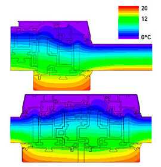

Infissi Salfer: Combinati Legno-Alluminio e PVC
La vasta selezione di Infissi Salfer: comodità, design elegante e sicurezza in un unico pacchetto.

Infisso GranducaHP
Informazioni tecniche prodotto
- Spessore: nominale +/- 0,05 mm
- Finiture: opaca o strutturata
- Resistenza all'abrasione: UNI 9115 Livello > 4
- Tendenza a ritenere lo sporco: UNI 9300 Livello > 4
- Resistenza al graffio: UNI 9428 Livello > 3
- Resistenza alle macchie: EN 14323 Gruppo 1 > 4, Gruppo 2 > 3
- Resistenza alla luce: UNI 9427 > 5 scala dei grigi
- Emissione formaldeide: EN 717-2 < 3,5 mg/hm2
Dettagli Struttura
Serramenti costruiti con l'impiego di profili in Alluminio-ABS-Legno della linea I NOBILI serie Granduca HP a taglio termico.
La larghezza del telaio fisso è di 64 mm per le versioni Line e Class a differenza
della versione Look che è di 90 mm, mentre l'anta a sormonto nella versione Class misura 93 mm e nelle versioni Line e Look misura 90 mm.
La battuta del profilo in legno del telaio fisso potrà essere di 22 mm o 40 mm per le versioni Line, Class e Look.
Tutti i profili, sia di telaio sia di anta, saranno costituiti da profili esterni in alluminio,
intermedi in ABS tubolari anche nella zona di isolamento, per garantire una buona resistenza meccanica,
e un buon allineamento per giunzioni a 45° e 90° stabili.
Il collegamento tra i profili in alluminio e i profili intermedi in ABS sarà realizzato mediante apposita
sede utile ad ospitare l'incastro creato sul profilo in ABS.
L'assemblaggio dei profili esterni in alluminio e intermedi in ABS
sarà effettuato mediante rullatura meccanica per garantire una migliore resistenza allo scorrimento.
Disponibile in 3 versioni:
Infisso MarcheseHP
Informazioni tecniche prodotto
I serramenti saranno costruiti con l'impiego di profili in Alluminio-ABS della linea I NOBILI serie Marchese HP a taglio termico. La larghezza del telaio fisso è di 64 mm per le versioni Line e Class a differenza della versione Look che è di 86 mm, mentre l'anta a sormonto nella versione Class misura 93 mm e nelle versioni Line e Look misura 86 mm. La battuta del profilo in alluminio del telaio fisso potrà essere di 22 mm o 40 mm solo per le versioni Line e Class, a differenza della versione Look che ha esclusivamente telaio L. Tutti i profili, sia di telaio sia di anta, saranno costituiti da profili esterni in alluminio, intermedi in ABS tubolari anche nella zona di isolamento, per garantire una buona resistenza meccanica, e un buon allineamento per giunzioni a 45° e 90° stabili. Il collegamento tra i profili in alluminio e i profili intermedi in ABS sarà realizzato mediante apposita sede utile ad ospitare l'incastro creato sul profilo in ABS. L'assemblaggio dei profili esterni in alluminio e intermedi in ABS sarà effettuato mediante rullatura meccanica per garantire una migliore resistenza allo scorrimento.
Disponibile in 3 versioni:
Infisso Reluce
Informazioni tecniche prodotto
I telai saranno realizzati con l'impiego di profili in Legno-ABS-Alluminio, mentre le ante saranno realizzate con listoni di legno lamellare o legno massello della linea I NOBILI serie Reluce. La sezione del telaio fisso è di 64 mm per la versione Line a differenza della versione Look che è di 82 mm. La battuta del profilo in legno del telaio fisso nella versione Line e Look potrà essere di 22 mm o 40 mm. Tutti i profili di telaio saranno costituiti da profili esterni in alluminio, intermedi in ABS tubolari anche nella zona di isolamento, per garantire una buona resistenza meccanica, e un buon allineamento per giunzioni a 45° e 90° stabili. Il collegamento tra i profili in alluminio e i profili intermedi in ABS sarà realizzato mediante apposita sede utile ad ospitare l'incastro creato sul profilo in ABS. L'assemblaggio dei profili esterni in alluminio e intermedi in ABS sarà effettuato mediante rullatura meccanica per garantire una migliore resistenza allo scorrimento, mentre tutti i profili di anta avranno un'accoppiamento indiretto grazie all'interposizione di un elemento connettore ed isolante (tassello di bloccaggio in nylon ad incastro), il quale permette una dilatazione dei due materiali libera da tensioni.
Disponibile in 2 versioni:
Infisso Requadro
Informazioni tecniche prodotto
I serramenti saranno costruiti con l'impiego di profili in Alluminio-ABS della linea I NOBILI serie Marchese HP a taglio termico. La larghezza del telaio fisso è di 64 mm per le versioni Line e Class a differenza della versione Look che è di 86 mm, mentre l'anta a sormonto nella versione Class misura 93 mm e nelle versioni Line e Look misura 86 mm. La battuta del profilo in alluminio del telaio fisso potrà essere di 22 mm o 40 mm solo per le versioni Line e Class, a differenza della versione Look che ha esclusivamente telaio L. Tutti i profili, sia di telaio sia di anta, saranno costituiti da profili esterni in alluminio, intermedi in ABS tubolari anche nella zona di isolamento, per garantire una buona resistenza meccanica, e un buon allineamento per giunzioni a 45° e 90° stabili. Il collegamento tra i profili in alluminio e i profili intermedi in ABS sarà realizzato mediante apposita sede utile ad ospitare l'incastro creato sul profilo in ABS. L'assemblaggio dei profili esterni in alluminio e intermedi in ABS sarà effettuato mediante rullatura meccanica per garantire una migliore resistenza allo scorrimento.
Disponibile in 2 versioni:
Infisso Russo Alluminio TT
Informazioni tecniche prodotto
Sistema completo a taglio termico per la realizzazione di porte, finestre, vasistas, sporgere, bilico e scorrevole parallelo con apertura verso l'interno e verso l'esterno nella tipologia a giunto aperto. Estetica elegante unita alle eccellenti prestazioni per chi sceglie soluzioni sofisticate.
- Estrusione profilati: lega di alluminio EN AW 6060 (UNI 9006) HB65
- Stato di finitura: T5 (UNI EN 515:1996)
- Tipo profilato: taglio termico con barrette in poliammide da 34mm
- Dimensioni telaio: 79mm
- Dimensione anta: 86mm
- Sistema di tenuta: guarnizione in EPDM a giunto aperto
- Accessori: camera europea unificata
- Accessori supplementari: ferramenta a nastro
- Fuga tra i profilati: 5mm
- Sovrapposizione battuta interna: 6mm
- Applicazione vetro: fermavetro a scatto e vetro in filare
- Dimensione alloggiamento vetro: min 32mm e max 44mm
- Altezza aletta per sede vetro: 25mm
- Inserimento verticale vetrazioni: 18mm
- Sistema di chiusura: multipunto
Infisso Reglass
Informazioni tecniche prodotto
I telai saranno realizzati con l'impiego di profili in Legno-ABS-Alluminio, mentre le ante saranno realizzate con listoni di legno lamellare o legno massello della linea I NOBILI serie Reglass. La sezione del telaio fisso è di 64 mm per la versione Line a differenza della versione Look che è di 82 mm, mentre l’anta a sormonto nella versione Line e complanare nella versione Look misura 82 mm. La battuta del profilo in legno del telaio fisso nella versione Line e Look potrà essere di 22 mm o 40 mm. Tutti i profili di telaio saranno costituiti da profili esterni in alluminio, intermedi in ABS tubolari anche nella zona di isolamento, per garantire una buona resistenza meccanica, e un buon allineamento per giunzioni a 45° e 90° stabili.
Disponibile in 2 versioni:
Maggiori dettagli tecnici per gli Infissi
Isometria degli infissi
Il diagramma riporta le temperature dall'esterno verso l'interno, evidenziandone la differenza (15°C circa) sia in estate che in inverno. L'esempio si riferisce alla stagione fredda; in questo caso l'isolamento del serramento assicura il notevole risparmio energetico e di consumi.
